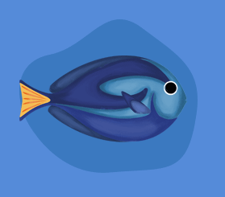
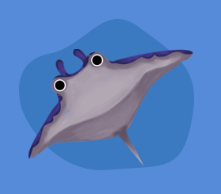
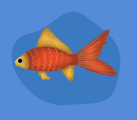
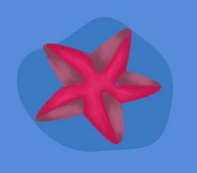
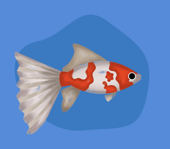
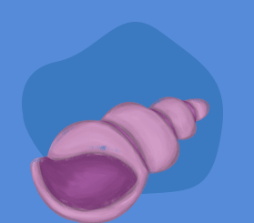

 Pez Cirujano Azul
El Pez Cirujano Azul, con su vibrante color y elegante forma, es uno de los habitantes más llamativos del arrecife de San Andrés, Colombia. Tiene como función vital comerse las algas que podrían sofocar los corales, ayudando así a mantener el equilibrio ecológico del ecosistema.
 Mantaraya
La mantarraya desliza su cuerpo aplanado con una gracia hipnótica, enterrándose en la arena o surcando las piscinas naturales del Cayo Acuario. Es tranquila y curiosa, que se acerca a los visitantes en busca de bocados y caricias suaves.
 Pez Dorado
El Pez Dorado es reconocido en todo el mundo como símbolo de calma y belleza. Tiene escamas doradas y aletas delicadas ha sido criado en múltiples variedades, desde cuerpos redondos hasta colas en forma de abanico.
Estrella de mar
La estrella de mar es un invertebrado marino con simetría radial y cinco brazos que se mueve lentamente gracias a cientos de pies tubulares.En los arrecifes de San Andrés, habita zonas rocosas y arenosa.
 Pez Cometa
El Pez Cometa, con su cuerpo alargado y su cola fluida en forma de abanico, es una variedad ornamental del pez dorado que deslumbra por su elegancia y energía. Su coloración blanca y naranja, como la que aparece en tu imagen, recuerda los tonos vibrantes de los peces tropicales.
 Caracol espiralado
El caracol marino espiralado es la concha externa de un molusco que la utiliza como refugio y protección. En los arrecifes de San Andrés, estas especies contribuyen al equilibrio alimenticio y al reciclaje de nutrientes.